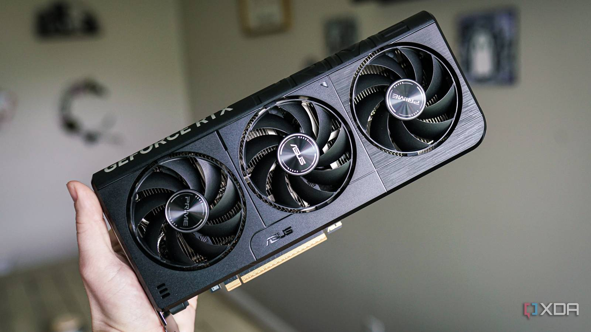

La RTX 5060 llegó al mercado el 19 de mayo a USD 299, y lo hizo envuelta en polémica. Nvidia bloqueó el acceso a los drivers de review incluso para medios que ya tenían la placa en sus manos, y solo los habilitó para outlets elegidos a dedo — con la condición de testear únicamente cinco juegos específicos a 1080p, comparando solo contra GPUs más débiles. GamersNexus lo llamó directamente lo que era: una "Forbidden Review". Tuvieron que comprar la placa con su plata para publicar benchmarks independientes.
Ahora que las reviews sin restricciones están afuera, podemos ver el panorama completo.
¿Qué tan rápida es?
En 1080p, la RTX 5060 rinde como una RTX 4060 Ti de la generación anterior, con una mejora de alrededor del 29% sobre la RTX 4060. Eso suena bien hasta que recordás que la 4060 Ti fue una de las GPUs más criticadas de NVIDIA por su relación precio/rendimiento. El salto generacional existe, pero no es el que esperabas por USD 299.
Lo más revelador está en los benchmarks a 1440p y 4K: la placa directamente se desmorona. En varios juegos a 1440p la Intel Arc B580, que tiene 12GB de VRAM y cuesta alrededor de USD 320, la iguala o supera. Y en 4K, la B580 llega a ganarle. La razón es siempre la misma: 8GB de VRAM.
El problema de los 8GB
XDA Developers lo resume bien: en Forza Motorsport el rendimiento empezó en 83 FPS, cayó a 66, después a 53 y terminó en 51 — todo dentro de la misma sesión, mientras el buffer de VRAM se iba llenando. No es un caso aislado. Varios títulos de 2023 en adelante muestran el mismo comportamiento a 1080p y 1440p cuando los ajustes suben un poco.
Para los juegos de esports más populares (CS2, DOTA 2, Apex, Helldivers 2) los 8GB alcanzan sin problema, pero para esos juegos tampoco necesitás una RTX 5060. El problema es que la placa debería acompañarte los próximos 3-4 años, y la VRAM necesaria va en aumento.
DLSS y Multi Frame Generation: el parche mágico
El argumento principal de NVIDIA es el DLSS 4 con Multi Frame Generation hasta 4x. Y funciona: a 1080p con MFG activado, los números son impresionantes. Cyberpunk 2077 con path tracing llega a 179 FPS; Doom: The Dark Ages a 150 FPS en Ultra Nightmare. Pero hay trampa: para lograr eso, el juego está renderizando a 720p y generando 3 de cada 4 frames artificialmente. El input lag que sentís no corresponde a esos 179 FPS — corresponde a los 45 FPS reales que está procesando la GPU. En juegos exigentes, se nota.
Además, MFG requiere más VRAM. El mismo feature que debería compensar la falta de rendimiento bruto es también el que más presiona el buffer de 8GB.
El veredicto de los reviews
XDA le puso 6/10. TechSpot y GamersNexus son igual de directos: es una GPU rápida para 1080p con DLSS activado, pero los 8GB la limitan seriamente para cualquier otra cosa. Peor aún, la Intel Arc B580 con sus 12GB compite de igual a igual o gana en resoluciones más altas, y cuesta USD 20-30 más, no el doble.
El contexto lo empeora: mañana AMD anuncia en Computex la RX 9060 XT, también a USD 299, pero con opción de 16GB por USD 349. Si las proyecciones de rendimiento se confirman, la RTX 5060 va a tener competencia real a su mismo precio.
¿La compramos?
Si jugás exclusivamente a 1080p, en esports o juegos livianos, y no planeás subir a 1440p en los próximos dos años, la RTX 5060 es una opción decente. Si estás pensando en algo que dure, vale la pena esperar a ver la RX 9060 XT. Las reviews de esa GPU van a ser el dato clave para decidir en este rango de precio.